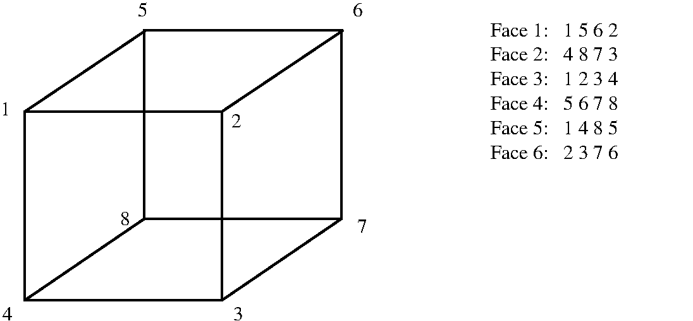
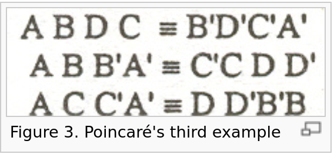
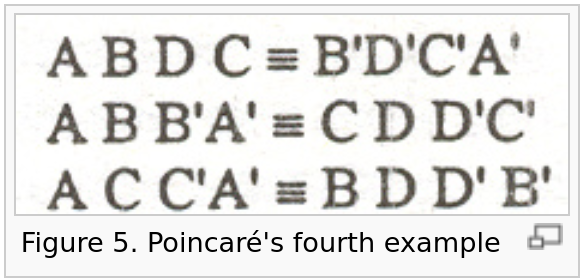
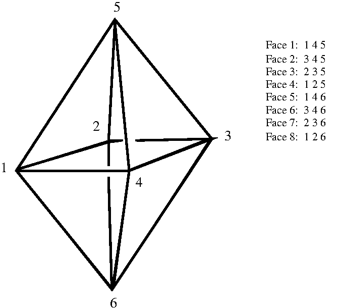
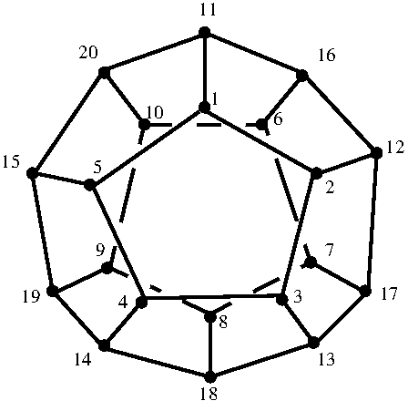
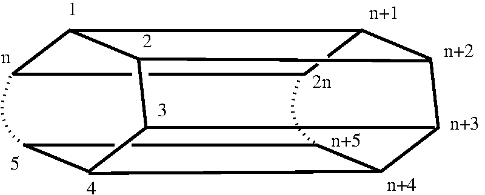
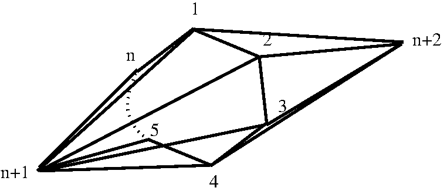

The following example constructs, as a regular CW-complex, a closed orientable 3-manifold \(W\) obtained from the 3-sphere by drilling out a tubular neighbourhood of a trefoil knot and then gluing a solid torus to the boundary of the cavity via a homeomorphism corresponding to a Dehn surgery coefficient \(p/q=17/16\).
gap> ap:=ArcPresentation(PureCubicalKnot(3,1));; gap> p:=17;;q:=16;; gap> W:=ThreeManifoldViaDehnSurgery(ap,p,q); Regular CW-complex of dimension 3
The next commands show that this \(3\)-manifold \(W\) has integral homology
\( H_0(W,\mathbb Z)=\mathbb Z\), \( H_1(W,\mathbb Z)=\mathbb Z_{16}\), \( H_2(W,\mathbb Z)=0\), \( H_3(W,\mathbb Z)=\mathbb Z\)
and that the fundamental group \(\pi_1(W)\) is non-abelian.
gap> Homology(W,0);Homology(W,1);Homology(W,2);Homology(W,3); [ 0 ] [ 16 ] [ ] [ 0 ] gap> F:=FundamentalGroup(W);; gap> L:=LowIndexSubgroupsFpGroup(F,10);; gap> List(L,AbelianInvariants); [ [ 16 ], [ 3, 8 ], [ 3, 4 ], [ 2, 3 ], [ 16, 43 ], [ 8, 43, 43 ] ]
The following famous result of Lickorish and (independently) Wallace shows that Dehn surgery on knots leads to an interesting range of spaces.
Theorem: Every closed, orientable, connected \(3\)-manifold can be obtained by surgery on a link in \(S^3\). (Moreover, one can always perform the surgery with surgery coefficients \(\pm 1\) and with each individual component of the link unknotted.)
The following example constructs the connected sum \(W=A\#B\) of two \(3\)-manifolds, where \(A\) is obtained from a \(5/1\) Dehn surgery on the complement of the first prime knot on 11 crossings and \(B\) is obtained by a \(5/1\) Dehn surgery on the complement of the second prime knot on 11 crossings. The homology groups
\(H_1(W,\mathbb Z) = \mathbb Z_2\oplus \mathbb Z_{594}\), \(H_2(W,\mathbb Z) = 0\), \(H_3(W,\mathbb Z) = \mathbb Z\)
are computed.
gap> ap1:=ArcPresentation(PureCubicalKnot(11,1));; gap> A:=ThreeManifoldViaDehnSurgery(ap1,5,1);; gap> ap2:=ArcPresentation(PureCubicalKnot(11,2));; gap> B:=ThreeManifoldViaDehnSurgery(ap2,5,1);; gap> W:=ConnectedSum(A,B); #W:=ConnectedSum(A,B,-1) would yield A#-B where -B has the opposite orientation Regular CW-complex of dimension 3 gap> Homology(W,1); [ 2, 594 ] gap> Homology(W,2); [ ] gap> Homology(W,3); [ 0 ]
Given a closed connected orientable \(3\)-manifold \(W\), a finite group \(G\) and a 3-cocycle \(\alpha\in H^3(BG,U(1))\) Dijkgraaf and Witten define the complex number
$$ Z^{G,\alpha}(W) = \frac{1}{|G|}\sum_{\gamma\in {\rm Hom}(\pi_1W, G)} \langle \gamma^\ast[\alpha], [M]\rangle \ \in\ \mathbb C\ $$ where \(\gamma\) ranges over all group homomorphisms \(\gamma\colon \pi_1W \rightarrow G\). This complex number is an invariant of the homotopy type of \(W\) and is useful for distinguishing between certain homotopically distinct \(3\)-manifolds.
A homology version of the Dijkgraaf-Witten invariant can be defined as the set of homology homomorphisms $$D_G(W) =\{ \gamma_\ast\colon H_3(W,\mathbb Z) \longrightarrow H_3(BG,\mathbb Z) \}_{\gamma\in {\rm Hom}(\pi_1W, G)}.$$ Since \(H_3(W,\mathbb Z)\cong \mathbb Z\) we represent \(D_G(W)\) by the set \(D_G(W)=\{ \gamma_\ast(1) \}_{\gamma\in {\rm Hom}(\pi_1W, G)}\) where \(1\) denotes one of the two possible generators of \(H_3(W,\mathbb Z)\).
For any coprime integers \(p,q\ge 1\) the lens space \(L(p,q)\) is obtained from the 3-sphere by drilling out a tubular neighbourhood of the trivial knot and then gluing a solid torus to the boundary of the cavity via a homeomorphism corresponding to a Dehn surgery coefficient \(p/q\). Lens spaces have cyclic fundamental group \(\pi_1(L(p,q))=C_p\) and homology \(H_1(L(p,q),\mathbb Z)\cong \mathbb Z_p\), \(H_2(L(p,q),\mathbb Z)\cong 0\), \(H_3(L(p,q),\mathbb Z)\cong \mathbb Z\). It was proved by J.H.C. Whitehead that two lens spaces \(L(p,q)\) and \(L(p',q')\) are homotopy equivalent if and only if \(p=p'\) and \(qq'\equiv \pm n^2 \bmod p\) for some integer \(n\).
The following session constructs the two lens spaces \(L(5,1)\) and \(L(5,2)\). The homology version of the Dijkgraaf-Witten invariant is used with \(G=C_5\) to demonstrate that the two lens spaces are not homotopy equivalent.
gap> ap:=[[2,1],[2,1]];; #Arc presentation for the trivial knot gap> L51:=ThreeManifoldViaDehnSurgery(ap,5,1);; gap> D:=DijkgraafWittenInvariant(L51,CyclicGroup(5)); [ g1^4, g1^4, g1, g1, id ] gap> L52:=ThreeManifoldViaDehnSurgery(ap,5,2);; gap> D:=DijkgraafWittenInvariant(L52,CyclicGroup(5)); [ g1^3, g1^3, g1^2, g1^2, id ]
A theorem of Fermat and Euler states that if a prime \(p\) is congruent to 3 modulo 4, then for any \(q\) exactly one of \(\pm q\) is a quadratic residue mod p. For all other primes \(p\) either both or neither of \(\pm q\) is a quadratic residue mod \(p\). Thus for fixed \(p \equiv 3 \bmod 4\) the lens spaces \(L(p,q)\) form a single homotopy class. There are precisely two homotopy classes of lens spaces for other \(p\).
The following commands confirm that \(L(13,1) \not\simeq L(13,2)\).
gap> L13_1:=ThreeManifoldViaDehnSurgery([[1,2],[1,2]],13,1);; gap> DijkgraafWittenInvariant(L13_1,CyclicGroup(13)); [ g1^12, g1^12, g1^10, g1^10, g1^9, g1^9, g1^4, g1^4, g1^3, g1^3, g1, g1, id ] gap> L13_2:=ThreeManifoldViaDehnSurgery([[1,2],[1,2]],13,2);; gap> DijkgraafWittenInvariant(L13_2,CyclicGroup(13)); [ g1^11, g1^11, g1^8, g1^8, g1^7, g1^7, g1^6, g1^6, g1^5, g1^5, g1^2, g1^2, id ]
The following commands construct the multiplication table (with respect to some basis) for the cohomology rings \(H^\ast(L(13,1),\mathbb Z_{13})\) and \(H^\ast(L(13,2),\mathbb Z_{13})\). These rings are isomorphic and so fail to distinguish between the homotopy types of the lens spaces \(L(13,1)\) and \(L(13,2)\).
gap> L13_1:=ThreeManifoldViaDehnSurgery([[1,2],[1,2]],13,1);; gap> L13_2:=ThreeManifoldViaDehnSurgery([[1,2],[1,2]],13,2);; gap> L13_1:=BarycentricSubdivision(L13_1);; gap> L13_2:=BarycentricSubdivision(L13_2);; gap> A13_1:=CohomologyRing(L13_1,13);; gap> A13_2:=CohomologyRing(L13_2,13);; gap> M13_1:=List([1..4],i->[]);; gap> B13_1:=CanonicalBasis(A13_1);; gap> M13_2:=List([1..4],i->[]);; gap> B13_2:=CanonicalBasis(A13_2);; gap> for i in [1..4] do > for j in [1..4] do > M13_1[i][j]:=B13_1[i]*B13_1[j]; > od;od; gap> for i in [1..4] do > for j in [1..4] do > M13_2[i][j]:=B13_2[i]*B13_2[j]; > od;od; gap> Display(M13_1); [ [ v.1, v.2, v.3, v.4 ], [ v.2, 0*v.1, (Z(13)^6)*v.4, 0*v.1 ], [ v.3, (Z(13)^6)*v.4, 0*v.1, 0*v.1 ], [ v.4, 0*v.1, 0*v.1, 0*v.1 ] ] gap> Display(M13_2); [ [ v.1, v.2, v.3, v.4 ], [ v.2, 0*v.1, (Z(13))*v.4, 0*v.1 ], [ v.3, (Z(13))*v.4, 0*v.1, 0*v.1 ], [ v.4, 0*v.1, 0*v.1, 0*v.1 ] ]
Given a closed connected oriented \(3\)-manifold \(W\) let \(\tau H_1(W,\mathbb Z)\) denote the torsion subgroup of the first integral homology. The linking form is a bilinear mapping
\(Lk_W\colon \tau H_1(W,\mathbb Z) \times \tau H_1(W,\mathbb Z) \longrightarrow \mathbb Q/\mathbb Z\).
To construct this form note that we have a Poincare duality isomorphism
\(\rho\colon H^2(W,\mathbb Z) \stackrel{\cong}{\longrightarrow} H_1(W,\mathbb Z), z \mapsto z\cap [W]\)
involving the cap product with the fundamental class \([W]\in H^3(W,\mathbb Z)\). That is, \([M]\) is the generator of \(H^3(W,\mathbb Z)\cong \mathbb Z\) determining the orientation. The short exact sequence \(\mathbb Z \rightarrowtail \mathbb Q \twoheadrightarrow \mathbb Q/\mathbb Z\) gives rise to a cohomology exact sequence
\( \rightarrow H^1(W,\mathbb Q) \rightarrow H^1(W,\mathbb Q/\mathbb Z) \stackrel{\beta}{\longrightarrow} H^2(W,\mathbb Z) \rightarrow H^2(W,\mathbb Q) \rightarrow \)
from which we obtain the isomorphism \(\beta \colon \tau H^1(W,\mathbb Q/\mathbb Z) \stackrel{\cong}{\longrightarrow} \tau H^2(W,\mathbb Z)\). The linking form \(Lk_W\) can be defined as the composite
\(Lk_W\colon \tau H_1(W,\mathbb Z) \times \tau H_1(W,\mathbb Z) \stackrel{1\times \rho^{-1}}{\longrightarrow} \tau H_1(W,\mathbb Z) \times \tau H^2(W,\mathbb Z) \stackrel{1\times \beta^{-1}}{\longrightarrow} \tau H_1(W,\mathbb Z) \times \tau H^1(W,\mathbb Q/\mathbb Z) \stackrel{ev}{\longrightarrow } \mathbb Q/\mathbb Z \)
where \(ev(x,\alpha)\) evaluates a \(1\)-cocycle \(\alpha\) on a \(1\)-cycle \(x\).
The linking form can be used to define the set
\(I^O(W) = \{Lk_W(g,g) \ \colon \ g\in \tau H_1(W,\mathbb Z)\}\)
which is an oriented-homotopy invariant of \(W\). Letting \(W^+\) and \(W^-\) denote the two possible orientations on the manifold, the set
\(I(W) =\{I^O(W^+), I^O(W^-)\}\)
is a homotopy invariant of \(W\) which in this manual we refer to as the linking form homotopy invariant.
The following commands compute the linking form homotopy invariant for the lens spaces \(L(13,q)\) with \(1\le q\le 12\). This invariant distinguishes between the two homotopy types that arise.
gap> LensSpaces:=[];; gap> for q in [1..12] do > Add(LensSpaces,ThreeManifoldViaDehnSurgery([[1,2],[1,2]],13,q)); > od; gap> Display(List(LensSpaces,LinkingFormHomotopyInvariant));; [ [ [ 0, 1/13, 1/13, 3/13, 3/13, 4/13, 4/13, 9/13, 9/13, 10/13, 10/13, 12/13, 12/13 ], [ 0, 1/13, 1/13, 3/13, 3/13, 4/13, 4/13, 9/13, 9/13, 10/13, 10/13, 12/13, 12/13 ] ], [ [ 0, 2/13, 2/13, 5/13, 5/13, 6/13, 6/13, 7/13, 7/13, 8/13, 8/13, 11/13, 11/13 ], [ 0, 2/13, 2/13, 5/13, 5/13, 6/13, 6/13, 7/13, 7/13, 8/13, 8/13, 11/13, 11/13 ] ], [ [ 0, 1/13, 1/13, 3/13, 3/13, 4/13, 4/13, 9/13, 9/13, 10/13, 10/13, 12/13, 12/13 ], [ 0, 1/13, 1/13, 3/13, 3/13, 4/13, 4/13, 9/13, 9/13, 10/13, 10/13, 12/13, 12/13 ] ], [ [ 0, 1/13, 1/13, 3/13, 3/13, 4/13, 4/13, 9/13, 9/13, 10/13, 10/13, 12/13, 12/13 ], [ 0, 1/13, 1/13, 3/13, 3/13, 4/13, 4/13, 9/13, 9/13, 10/13, 10/13, 12/13, 12/13 ] ], [ [ 0, 2/13, 2/13, 5/13, 5/13, 6/13, 6/13, 7/13, 7/13, 8/13, 8/13, 11/13, 11/13 ], [ 0, 2/13, 2/13, 5/13, 5/13, 6/13, 6/13, 7/13, 7/13, 8/13, 8/13, 11/13, 11/13 ] ], [ [ 0, 2/13, 2/13, 5/13, 5/13, 6/13, 6/13, 7/13, 7/13, 8/13, 8/13, 11/13, 11/13 ], [ 0, 2/13, 2/13, 5/13, 5/13, 6/13, 6/13, 7/13, 7/13, 8/13, 8/13, 11/13, 11/13 ] ], [ [ 0, 2/13, 2/13, 5/13, 5/13, 6/13, 6/13, 7/13, 7/13, 8/13, 8/13, 11/13, 11/13 ], [ 0, 2/13, 2/13, 5/13, 5/13, 6/13, 6/13, 7/13, 7/13, 8/13, 8/13, 11/13, 11/13 ] ], [ [ 0, 2/13, 2/13, 5/13, 5/13, 6/13, 6/13, 7/13, 7/13, 8/13, 8/13, 11/13, 11/13 ], [ 0, 2/13, 2/13, 5/13, 5/13, 6/13, 6/13, 7/13, 7/13, 8/13, 8/13, 11/13, 11/13 ] ], [ [ 0, 1/13, 1/13, 3/13, 3/13, 4/13, 4/13, 9/13, 9/13, 10/13, 10/13, 12/13, 12/13 ], [ 0, 1/13, 1/13, 3/13, 3/13, 4/13, 4/13, 9/13, 9/13, 10/13, 10/13, 12/13, 12/13 ] ], [ [ 0, 1/13, 1/13, 3/13, 3/13, 4/13, 4/13, 9/13, 9/13, 10/13, 10/13, 12/13, 12/13 ], [ 0, 1/13, 1/13, 3/13, 3/13, 4/13, 4/13, 9/13, 9/13, 10/13, 10/13, 12/13, 12/13 ] ], [ [ 0, 2/13, 2/13, 5/13, 5/13, 6/13, 6/13, 7/13, 7/13, 8/13, 8/13, 11/13, 11/13 ], [ 0, 2/13, 2/13, 5/13, 5/13, 6/13, 6/13, 7/13, 7/13, 8/13, 8/13, 11/13, 11/13 ] ], [ [ 0, 1/13, 1/13, 3/13, 3/13, 4/13, 4/13, 9/13, 9/13, 10/13, 10/13, 12/13, 12/13 ], [ 0, 1/13, 1/13, 3/13, 3/13, 4/13, 4/13, 9/13, 9/13, 10/13, 10/13, 12/13, 12/13 ] ] ]
In 1935 K. Reidemeister [Rei35] classified lens spaces up to orientation preserving PL-homeomorphism. This was generalized by E. Moise [Moi52] in 1952 to a classification up to homeomorphism -- his method requred the proof of the Hauptvermutung for \(3\)-dimensional manifolds. In 1960, following a suggestion of R. Fox, a proof was given by E.J. Brody [Bro60] that avoided the need for the Hauptvermutung. Reidemeister's method, using what is know termed Reidermeister torsion, and Brody's method, using tubular neighbourhoods of \(1\)-cycles, both require identifying a suitable "preferred" generator of \(H_1(L(p,q),\mathbb Z)\). In 2003 J. Przytycki and A. Yasukhara [PY03] provided an alternative method for classifying lens spaces, which uses the linking form and again requires the identification of a "preferred" generator of \(H_1(L(p,q),\mathbb Z)\).
Przytycki and Yasukhara proved the following.
Theorem. Let \(\rho\colon S^ 3 \rightarrow L(p, q)\) be the \(p\)-fold cyclic cover and \(K\) a knot in \(L(p, q)\) that represents a generator of \(H_1 (L(p, q), \mathbb Z)\). If \(\rho ^{-1} (K)\) is the trivial knot, then \(Lk_{ L(p,q)} ([K], [K]) = q/p\) or \(= \overline q/p \in \mathbb Q/\mathbb Z\) where \(q\overline q \equiv 1 \bmod p\).
The ingredients of this theorem can be applied in HAP, but at present only to small examples of lens spaces. The obstruction to handling large examples is that the current default method for computing the linking form involves barycentric subdivision to produce a simplicial complex from a regular CW-complex, and then a homotopy equivalence from this typically large simplicial complex to a smaller non-regular CW-complex. However, for homeomorphism invariants that are not homotopy invariants there is a need to avoid homotopy equivalences. In the current version of HAP this means that in order to obtain delicate homeomorphism invariants we have to perform homology computations on typically large simplicial complexes. In a future version of HAP we hope to avoid the obstruction by implementing cup products, cap products and linking forms entirely within the category of regular CW-complexes.
The following commands construct a small lens space \(L=L(p,q)\) with unknown values of \(p,q\). Subsequent commands will determine the homeomorphism type of \(L\).
gap> p:=Random([2,3,5,7,11,13,17]);; gap> q:=Random([1..p-1]);; gap> L:=ThreeManifoldViaDehnSurgery([[1,2],[1,2]],p,q); Regular CW-complex of dimension 3
We can readily determine the value of \(p=11\) by calculating the order of \(\pi_1(L)\).
gap> F:=FundamentalGroupWithPathReps(L);; gap> StructureDescription(F); "C11"
The next commands take the default edge path \(\gamma\colon S^1\rightarrow L\) representing a generator of the cyclic group \(\pi_1(L)\) and lift it to an edge path \(\tilde\gamma\colon S^1\rightarrow \tilde L\).
gap> U:=UniversalCover(L);; gap> G:=U!.group;; gap> p:=EquivariantCWComplexToRegularCWMap(U,Group(One(G)));; gap> U:=Source(p);; gap> gamma:=[];; gap> gamma[2]:=F!.loops[1];; gap> gamma[2]:=List(gamma[2],AbsInt);; gap> gamma[1]:=List(gamma[2],k->L!.boundaries[2][k]);; gap> gamma[1]:=SSortedList(Flat(gamma[1]));; gap> gap> gammatilde:=[[],[],[],[]];; gap> for k in [1..U!.nrCells(0)] do > if p!.mapping(0,k) in gamma[1] then Add(gammatilde[1],k); fi; > od; gap> for k in [1..U!.nrCells(1)] do > if p!.mapping(1,k) in gamma[2] then Add(gammatilde[2],k); fi; > od; gap> gammatilde:=CWSubcomplexToRegularCWMap([U,gammatilde]); Map of regular CW-complexes
The next commands check that the path \(\tilde\gamma\) is unknotted in \(\tilde L\cong S^3\) by checking that \(\pi_1(\tilde L\setminus {\rm image}(\tilde\gamma))\) is infinite cyclic.
gap> C:=RegularCWComplexComplement(gammatilde); Regular CW-complex of dimension 3 gap> G:=FundamentalGroup(C); <fp group of size infinity on the generators [ f2 ]>
Since \(\tilde\gamma\) is unkotted the cycle \(\gamma\) represents the preferred generator \([\gamma]\in H_1(L,\mathbb Z)\). The next commands compute \(Lk_L([\gamma],[\gamma])= 7/11 \).
gap> LinkingFormHomeomorphismInvariant(L); [ 7/11 ]
The classification of Moise/Brody states that \(L(p,q)\cong L(p,q')\) if and only if \(qq'\equiv \pm 1 \bmod p\). Hence the lens space \(L\) has the homeomorphism type
\(L\cong L(11,7) \cong L(11,8) \cong L(11,4) \cong L(11,3)\).
The lens space \(L(5,1)\) is a quotient of the \(3\)-sphere \(S^3\) by a certain action of the cyclic group \(C_5\). It can be realized by a \(p/q=5/1\) Dehn filling of the complement of the trivial knot. It can also be realized by Dehn fillings of other knots. To see this, the following commands compute the manifold \(W\) obtained from a \(p/q=1/5\) Dehn filling of the complement of the trefoil and show that \(W\) at least has the same integral homology and same fundamental group as \(L(5,1)\).
gap> ap:=ArcPresentation(PureCubicalKnot(3,1));; gap> W:=ThreeManifoldViaDehnSurgery(ap,1,5);; gap> Homology(W,1); [ 5 ] gap> Homology(W,2); [ ] gap> Homology(W,3); [ 0 ] gap> F:=FundamentalGroup(W);; gap> StructureDescription(F); "C5"
The next commands construct the universal cover \(\widetilde W\) and show that it has the same homology as \(S^3\) and trivivial fundamental group \(\pi_1(\widetilde W)=0\).
gap> U:=UniversalCover(W);; gap> G:=U!.group;; gap> Wtilde:=EquivariantCWComplexToRegularCWComplex(U,Group(One(G))); Regular CW-complex of dimension 3 gap> Homology(Wtilde,1); [ ] gap> Homology(Wtilde,2); [ ] gap> Homology(Wtilde,3); [ 0 ] gap> F:=FundamentalGroup(Wtilde); <fp group on the generators [ ]>
By construction the space \(\widetilde W\) is a manifold. Had we not known how the regular CW-complex \(\widetilde W\) had been constructed then we could prove that it is a closed \(3\)-manifold by creating its barycentric subdivision \(K=sd\widetilde W\), which is homeomorphic to \(\widetilde W\), and verifying that the link of each vertex in the simplicial complex \(sd\widetilde W\) is a \(2\)-sphere. The following command carries out this proof.
gap> IsClosedManifold(Wtilde); true
The Poincare conjecture (now proven) implies that \(\widetilde W\) is homeomorphic to \(S^3\). Hence \(W=S^3/C_5\) is a quotient of the \(3\)-sphere by an action of \(C_5\) and is hence a lens space \(L(5,q)\) for some \(q\).
The next commands determine that \(W\) is homeomorphic to \(L(5,4)\cong L(5,1)\).
gap> Lk:=LinkingFormHomeomorphismInvariant(W); [ 0, 4/5 ]
Moser [Mos71] gives a precise decription of the lens spaces arising from surgery on the trefoil knot and more generally from surgery on torus knots. Greene [Gre13] determines the lens spaces that arise by integer Dehn surgery along a knot in the three-sphere
Lens spaces are examples of \(3\)-manifolds with finite fundamental groups. The complete list of finite groups \(G\) arising as fundamental groups of closed connected \(3\)-manifolds is recalled in 7.12 where one method for computing their cohomology rings is presented. Their cohomology could also be computed from explicit \(3\)-manifolds \(W\) with \(\pi_1W=G\). For instance, the following commands realize a closed connected \(3\)-manifold \(W\) with \(\pi_1W = C_{11}\times SL_2(\mathbb Z_5)\).
gap> ap:=ArcPresentation(PureCubicalKnot(3,1));; gap> W:=ThreeManifoldViaDehnSurgery(ap,1,11);; gap> F:=FundamentalGroup(W);; gap> Order(F); 1320 gap> AbelianInvariants(F); [ 11 ] gap> StructureDescription(F); "C11 x SL(2,5)"
Hence the group \(G=C_{11}\times SL_2(\mathbb Z_5)\) of order \(1320\) acts freely on the \(3\)-sphere \(\widetilde W\). It thus has periodic cohomology with
\[ H_n(G,\mathbb Z) = \left\{ \begin{array}{ll} \mathbb Z_{11} & n\equiv 1 \bmod 4 \\ 0 & n\equiv 2 \bmod 4 \\ \mathbb Z_{1320} & n \equiv 3\bmod 4\\ \mathbb 0 & n\equiv 0 \bmod 4 \\ \end{array}\right. \]
for \(n > 0\).
In his seminal paper on "Analysis situs", published in 1895, Poincare constructed a series of closed 3-manifolds which played an important role in the development of his theory. A good account of these manifolds is given in the online Manifold Atlas Project (MAP). Most of his examples are constructed by identifications on the faces of a (solid) cube. The function PoincareCubeCWComplex() can be used to construct any 3-dimensional CW-complex arising from a cube by identifying the six faces pairwise; the vertices and faces of the cube are numbered as follows

and barycentric subdivision is used to ensure that the quotient is represented as a regular CW-complex.
Examples 3 and 4 from Poincare's paper, described in the following figures taken from MAP,
 
are constructed in the following example. Both are checked to be orientable manifolds, and are shown to have different homology. (Note that the second example in Poincare's paper is not a manifold -- the links of some of its vertices are not homeomorphic to a 2-sphere.)
gap> A:=1;;C:=2;;D:=3;;B:=4;; gap> Ap:=5;;Cp:=6;;Dp:=7;;Bp:=8;; gap> L:=[[A,B,D,C],[Bp,Dp,Cp,Ap]];; gap> M:=[[A,B,Bp,Ap],[Cp,C,D,Dp]];; gap> N:=[[A,C,Cp,Ap],[D,Dp,Bp,B]];; gap> Ex3:=PoincareCubeCWComplex(L,M,N); Regular CW-complex of dimension 3 gap> IsClosedManifold(Ex3); true gap> L:=[[A,B,D,C],[Bp,Dp,Cp,Ap]];; gap> M:=[[A,B,Bp,Ap],[C,D,Dp,Cp]];; gap> N:=[[A,C,Cp,Ap],[B,D,Dp,Bp]];; gap> Ex4:=PoincareCubeCWComplex(L,M,N); Regular CW-complex of dimension 3 gap> IsClosedManifold(Ex4); true gap> List([0..3],k->Homology(Ex3,k)); [ [ 0 ], [ 2, 2 ], [ ], [ 0 ] ] gap> List([0..3],k->Homology(Ex4,k)); [ [ 0 ], [ 2, 0 ], [ 0 ], [ 0 ] ]
The function PoincareCubeCWComplex(A,G) can also be applied to two inputs where \(A\) is a pairing of the six faces such as \(A=[[1,2],[3,4],[5,6]]\) and \(G\) is a list of three elements of the dihedral group of order \(8\) such as \(G=[(2,4),(2,4),(2,4)*(1,3)]\). The dihedral elements specify how each pair of faces are glued together. With these inputs it is easy to iterate over all possible values of \(A\) and \(G\) in order to construct all possible closed 3-manifolds arising from the pairwise identification of faces of a cube. We call such a manifold a cube manifold. Distinct values of \(A\) and \(G\) can of course yield homeomorphic spaces. To ensure that each possible cube manifold is constructed, at least once, up to homeomorphism it suffices to consider
\(A=[ [1,2], [3,4], [5,6] ]\), \(A=[ [1,2], [3,5], [4,6] ]\), \(A=[ [1,4], [2,6], [3,5] ]\)
and all \(G\) in \(D_8\times D_8\times D_8\).
The following commands iterate through these \(3\times8^3 = 1536\) pairs \((A,G)\) and show that in precisely 163 cases (just over 10% of cases) the quotient CW-complex is a closed 3-manifold.
gap> A1:= [ [1,2], [3,4], [5,6] ];; gap> A2:=[ [1,2], [3,5], [4,6] ];; gap> A3:=[ [1,4], [2,6], [3,5] ];; gap> D8:=DihedralGroup(IsPermGroup,8);; gap> Manifolds:=[];; gap> for A in [A1,A2,A3] do > for x in D8 do > for y in D8 do > for z in D8 do > G:=[x,y,z]; > F:=PoincareCubeCWComplex(A,G); > b:=IsClosedManifold(F); > if b=true then Add(Manifolds,F); fi; > od;od;od;od; gap> Size(Manifolds); 163
The following additional commands use integral homology and low index subgroups of fundamental groups to establish that the 163 cube manifolds represent at least 25 distinct homotopy equivalence classes of manifolds. One homotopy class is represented by up to 40 of the manifolds, and at least four of the homotopy classes are each represented by a single manifold..
gap> invariant1:=function(m); > return List([1..3],k->Homology(m,k)); > end;; gap> C:=Classify(Manifolds,invariant1);; gap> invariant2:=function(m) > local L; > L:=FundamentalGroup(m); > if GeneratorsOfGroup(L)= [] then return [];fi; > L:=LowIndexSubgroupsFpGroup(L,5); > L:=List(L,AbelianInvariants); > L:=SortedList(L); > return L; > end;; gap> D:=RefineClassification(C,invariant2);; gap> List(D,Size); [ 40, 2, 10, 15, 8, 6, 2, 6, 2, 5, 7, 1, 4, 11, 7, 7, 10, 4, 4, 2, 1, 3, 1, 1, 4 ]
The next commands construct a list of 18 orientable cube manifolds and a list of 7 non-orientable cube manifolds.
gap> Manifolds:=List(D,x->x[1]);; gap> OrientableManifolds:=Filtered(Manifolds,m->Homology(m,3)=[0]);; gap> NonOrientableManifolds:=Filtered(Manifolds,m->Homology(m,3)=[]);; gap> Length(OrientableManifolds); 18 gap> Length(NonOrientableManifolds); 7
The next commands show that the 7 non-orientable cube manifolds all have infinite fundamental groups.
gap> List(NonOrientableManifolds,m->IsFinite(FundamentalGroup(m))); [ false, false, false, false, false, false, false ]
The final commands show that (at least) 9 of the orientable manifolds have finite fundamental groups and list the isomorphism types of these finite groups. Note that it is now known that any closed 3-manifold with finite fundamental group is spherical (i.e. is a quotient of the 3-sphere). Spherical manifolds with cyclic fundamental group are, by definition, lens spaces.
gap> List(OrientableManifolds{[4,8,10,11,12,13,15,16,18]},m-> IsFinite(FundamentalGroup(m))); [ true, true, true, true, true, true, true, true, true ] gap> List(OrientableManifolds{[4,8,10,11,12,13,15,16,18]},m-> StructureDescription(FundamentalGroup(m))); [ "Q8", "C2", "C4", "C3 : C4", "C12", "C8", "C14", "C6", "1" ]
The following are the face pairings of 25 non-homeomorphic cube manifolds, with vertices of the cube numbered as describe above.
gap> for i in [1..25] do > p:=Manifolds[i]!.cubeFacePairings; > Print("Manifold ",i," has face pairings:\n"); > Print(p[1],"\n",p[2],"\n",p[3],"\n"); > Print("Fundamental group is: "); > if i in [ 1, 9, 12, 14, 15, 16, 17, 18, 19, 20, 22, 23, 25 ] then > Print(StructureDescription(FundamentalGroup(Manifolds[i])),"\n"); > else Print("infinite non-cyclic\n"); fi; > if Homology(Manifolds[i],3)=[0] then Print("Orientable, "); > else Print("Non orientable, "); fi; > Print(ManifoldType(Manifolds[i]),"\n"); > for x in Manifolds[i]!.edgeDegrees do > Print(x[2]," edges of \"degree\" ",x[1],", "); > od; > Print("\n\n"); > od; Manifold 1 has face pairings: [ [ 1, 5, 6, 2 ], [ 3, 7, 8, 4 ] ] [ [ 1, 2, 3, 4 ], [ 5, 8, 7, 6 ] ] [ [ 1, 4, 8, 5 ], [ 3, 2, 6, 7 ] ] Fundamental group is: Z x C2 Non orientable, other 4 edges of "degree" 2, 4 edges of "degree" 4, Manifold 2 has face pairings: [ [ 1, 5, 6, 2 ], [ 7, 8, 4, 3 ] ] [ [ 1, 2, 3, 4 ], [ 1, 5, 8, 4 ] ] [ [ 5, 8, 7, 6 ], [ 7, 6, 2, 3 ] ] Fundamental group is: infinite non-cyclic Non orientable, other 2 edges of "degree" 1, 2 edges of "degree" 3, 2 edges of "degree" 8, Manifold 3 has face pairings: [ [ 1, 5, 6, 2 ], [ 3, 7, 8, 4 ] ] [ [ 1, 2, 3, 4 ], [ 5, 6, 7, 8 ] ] [ [ 1, 4, 8, 5 ], [ 2, 3, 7, 6 ] ] Fundamental group is: infinite non-cyclic Non orientable, euclidean 6 edges of "degree" 4, Manifold 4 has face pairings: [ [ 1, 5, 6, 2 ], [ 3, 7, 8, 4 ] ] [ [ 1, 2, 3, 4 ], [ 5, 6, 7, 8 ] ] [ [ 1, 4, 8, 5 ], [ 6, 7, 3, 2 ] ] Fundamental group is: infinite non-cyclic Non orientable, euclidean 6 edges of "degree" 4, Manifold 5 has face pairings: [ [ 1, 5, 6, 2 ], [ 3, 7, 8, 4 ] ] [ [ 1, 2, 3, 4 ], [ 6, 5, 8, 7 ] ] [ [ 1, 4, 8, 5 ], [ 2, 6, 7, 3 ] ] Fundamental group is: infinite non-cyclic Non orientable, euclidean 6 edges of "degree" 4, Manifold 6 has face pairings: [ [ 1, 5, 6, 2 ], [ 3, 4, 8, 7 ] ] [ [ 1, 2, 3, 4 ], [ 5, 6, 7, 8 ] ] [ [ 1, 4, 8, 5 ], [ 2, 3, 7, 6 ] ] Fundamental group is: infinite non-cyclic Orientable, euclidean 6 edges of "degree" 4, Manifold 7 has face pairings: [ [ 1, 5, 6, 2 ], [ 7, 3, 4, 8 ] ] [ [ 1, 2, 3, 4 ], [ 1, 5, 8, 4 ] ] [ [ 5, 8, 7, 6 ], [ 7, 6, 2, 3 ] ] Fundamental group is: infinite non-cyclic Orientable, other 2 edges of "degree" 1, 2 edges of "degree" 3, 2 edges of "degree" 8, Manifold 8 has face pairings: [ [ 1, 5, 6, 2 ], [ 3, 4, 8, 7 ] ] [ [ 1, 2, 3, 4 ], [ 7, 8, 5, 6 ] ] [ [ 1, 4, 8, 5 ], [ 7, 6, 2, 3 ] ] Fundamental group is: infinite non-cyclic Orientable, other 4 edges of "degree" 2, 2 edges of "degree" 8, Manifold 9 has face pairings: [ [ 1, 5, 6, 2 ], [ 3, 4, 8, 7 ] ] [ [ 1, 2, 3, 4 ], [ 8, 5, 6, 7 ] ] [ [ 1, 4, 8, 5 ], [ 6, 2, 3, 7 ] ] Fundamental group is: Q8 Orientable, spherical 8 edges of "degree" 3, Manifold 10 has face pairings: [ [ 1, 5, 6, 2 ], [ 4, 8, 7, 3 ] ] [ [ 1, 2, 3, 4 ], [ 7, 8, 5, 6 ] ] [ [ 1, 4, 8, 5 ], [ 7, 6, 2, 3 ] ] Fundamental group is: infinite non-cyclic Orientable, other 4 edges of "degree" 2, 4 edges of "degree" 4, Manifold 11 has face pairings: [ [ 1, 5, 6, 2 ], [ 4, 3, 7, 8 ] ] [ [ 1, 2, 3, 4 ], [ 5, 6, 7, 8 ] ] [ [ 1, 4, 8, 5 ], [ 2, 3, 7, 6 ] ] Fundamental group is: infinite non-cyclic Non orientable, euclidean 6 edges of "degree" 4, Manifold 12 has face pairings: [ [ 1, 5, 6, 2 ], [ 4, 8, 7, 3 ] ] [ [ 1, 2, 3, 4 ], [ 5, 6, 7, 8 ] ] [ [ 1, 4, 8, 5 ], [ 2, 3, 7, 6 ] ] Fundamental group is: Z x Z x Z Orientable, euclidean 6 edges of "degree" 4, Manifold 13 has face pairings: [ [ 1, 5, 6, 2 ], [ 4, 8, 7, 3 ] ] [ [ 1, 2, 3, 4 ], [ 5, 6, 7, 8 ] ] [ [ 1, 4, 8, 5 ], [ 7, 6, 2, 3 ] ] Fundamental group is: infinite non-cyclic Orientable, euclidean 6 edges of "degree" 4, Manifold 14 has face pairings: [ [ 1, 5, 6, 2 ], [ 7, 3, 4, 8 ] ] [ [ 1, 2, 3, 4 ], [ 7, 8, 5, 6 ] ] [ [ 1, 4, 8, 5 ], [ 7, 6, 2, 3 ] ] Fundamental group is: C2 Orientable, spherical 12 edges of "degree" 2, Manifold 15 has face pairings: [ [ 1, 5, 6, 2 ], [ 3, 7, 8, 4 ] ] [ [ 1, 2, 3, 4 ], [ 1, 5, 8, 4 ] ] [ [ 5, 8, 7, 6 ], [ 2, 3, 7, 6 ] ] Fundamental group is: Z Non orientable, other 4 edges of "degree" 1, 2 edges of "degree" 2, 2 edges of "degree" 8, Manifold 16 has face pairings: [ [ 1, 5, 6, 2 ], [ 3, 4, 8, 7 ] ] [ [ 1, 2, 3, 4 ], [ 1, 5, 8, 4 ] ] [ [ 5, 8, 7, 6 ], [ 2, 3, 7, 6 ] ] Fundamental group is: Z Orientable, other 4 edges of "degree" 1, 2 edges of "degree" 2, 2 edges of "degree" 8, Manifold 17 has face pairings: [ [ 1, 5, 6, 2 ], [ 3, 4, 8, 7 ] ] [ [ 1, 2, 3, 4 ], [ 1, 5, 8, 4 ] ] [ [ 5, 8, 7, 6 ], [ 3, 7, 6, 2 ] ] Fundamental group is: C4 Orientable, spherical 2 edges of "degree" 1, 2 edges of "degree" 3, 2 edges of "degree" 8, Manifold 18 has face pairings: [ [ 1, 5, 6, 2 ], [ 3, 4, 8, 7 ] ] [ [ 1, 2, 3, 4 ], [ 8, 4, 1, 5 ] ] [ [ 5, 8, 7, 6 ], [ 6, 2, 3, 7 ] ] Fundamental group is: C3 : C4 Orientable, spherical 2 edges of "degree" 2, 4 edges of "degree" 5, Manifold 19 has face pairings: [ [ 1, 5, 6, 2 ], [ 3, 4, 8, 7 ] ] [ [ 1, 2, 3, 4 ], [ 8, 4, 1, 5 ] ] [ [ 5, 8, 7, 6 ], [ 3, 7, 6, 2 ] ] Fundamental group is: C12 Orientable, spherical 2 edges of "degree" 2, 2 edges of "degree" 3, 2 edges of "degree" 7, Manifold 20 has face pairings: [ [ 1, 5, 6, 2 ], [ 3, 4, 8, 7 ] ] [ [ 1, 2, 3, 4 ], [ 5, 8, 4, 1 ] ] [ [ 5, 8, 7, 6 ], [ 3, 7, 6, 2 ] ] Fundamental group is: C8 Orientable, spherical 8 edges of "degree" 3, Manifold 21 has face pairings: [ [ 1, 5, 6, 2 ], [ 7, 3, 4, 8 ] ] [ [ 1, 2, 3, 4 ], [ 8, 4, 1, 5 ] ] [ [ 5, 8, 7, 6 ], [ 7, 6, 2, 3 ] ] Fundamental group is: infinite non-cyclic Orientable, euclidean 6 edges of "degree" 4, Manifold 22 has face pairings: [ [ 1, 5, 6, 2 ], [ 5, 6, 7, 8 ] ] [ [ 3, 7, 8, 4 ], [ 7, 6, 2, 3 ] ] [ [ 1, 2, 3, 4 ], [ 8, 4, 1, 5 ] ] Fundamental group is: C14 Orientable, spherical 2 edges of "degree" 2, 4 edges of "degree" 5, Manifold 23 has face pairings: [ [ 1, 5, 6, 2 ], [ 5, 6, 7, 8 ] ] [ [ 3, 7, 8, 4 ], [ 7, 6, 2, 3 ] ] [ [ 1, 2, 3, 4 ], [ 5, 8, 4, 1 ] ] Fundamental group is: C6 Orientable, spherical 6 edges of "degree" 2, 2 edges of "degree" 6, Manifold 24 has face pairings: [ [ 1, 5, 6, 2 ], [ 7, 8, 5, 6 ] ] [ [ 3, 7, 8, 4 ], [ 2, 3, 7, 6 ] ] [ [ 1, 2, 3, 4 ], [ 4, 1, 5, 8 ] ] Fundamental group is: infinite non-cyclic Orientable, euclidean 6 edges of "degree" 4, Manifold 25 has face pairings: [ [ 1, 5, 6, 2 ], [ 6, 7, 8, 5 ] ] [ [ 3, 7, 8, 4 ], [ 3, 7, 6, 2 ] ] [ [ 1, 2, 3, 4 ], [ 1, 5, 8, 4 ] ] Fundamental group is: 1 Orientable, spherical 4 edges of "degree" 1, 4 edges of "degree" 5,
A platonic solid is a convex, regular polyhedron in \(3\)-dimensional euclidean \(\mathbb E^3\) or spherical \(\mathbb S^3\) or hyperbolic space \(\mathbb H^3\). Being regular means that all edges are congruent, all faces are congruent, all angles between adjacent edges in a face are congruent, all dihedral angles between adjacent faces are congruent. A platonic cube in euclidean space has six congruent square faces with diherdral angle \(\pi/2\). A platonic cube in spherical space has dihedral angles \(2\pi/3\). A platonic cube in hyperbolic space has dihedral angles \(2\pi/5\). This can alternatively be expressed by saying that in a tessellation of \(\mathbb E^3\) by platonic cubes each edge is adjacent to 4 square faces. In a tessellation of \(\mathbb S^3\) by platonic cubes each edge is adjacent to 3 square faces. In a tessellation of \(\mathbb H^3\) by platonic cubes each edge is adjacent to 5 five square faces.
Any cube manifold \(M\) induces a cubical CW-decomposition of its universal cover \(\widetilde M\). We say that \(M\) is a platonic cube manifold if every edge in \(\widetilde M\) is adjacent to 4 faces in the euclidean case \(\widetilde M=\mathbb E^3\), is adjacent to 3 faces in the spherical case \(\widetilde M=\mathbb S^3\), is adjacent to 5 faces in the hyperbolic case \(\widetilde M=\mathbb H^3\).
In the above list of 25 cube manifolds we see that the euclidean manifolds 3, 4, 5, 6, 11 are platonic and that the spherical manifolds 9, 20 are platonic.
Using the Simpcomp package for GAP we can show that many of the 163 cube manifolds constructed above are homeomorphic. We do this by showing that barycentric subdivisions of many of the manifolds are combinatorially the same.
The following commands establish homeomorphisms (simplicial complex isomorphisms) between manifolds in each equivalence class D[i] above for \(1 \le i\le 25\), and then discard all but one manifold in each homeomorphism class. We are left with 59 cube manifolds, some of which may be homeomorphic, representing at least 25 distinct homeomorphism classes. The 59 manifolds are stored in the list DD of length 25 each of whose terms is a list of cube manifolds.
gap> LoadPackage("Simpcomp");; gap> inv3:=function(m) > local K; > K:=BarycentricSubdivision(m); > K:=MaximalSimplicesOfSimplicialComplex(K); > K:=SC(K); > if not SCIsStronglyConnected(K) then Print("WARNING!\n"); fi; > return SCExportIsoSig( K ); > end; function( m ) ... end gap> DD:=[];; gap> for x in D do > y:=Classify(x,inv3); > Add(DD,List(y,z->z[1])); > od; gap> List(DD,Size); [ 9, 1, 3, 3, 3, 1, 1, 1, 1, 1, 2, 1, 2, 7, 4, 4, 3, 1, 1, 1, 1, 3, 1, 1, 3 ]
The function PoincareCubeCWCompex() applies cell simplifications in its construction of the quotient of a CW-complex. A variant PoincareCubeCWCompexNS() performs no cell simplifications and thus returns a bigger cell complex which we can attempt to use to establish further homeomorphisms. This is done in the following session and succeeds in showing that there are at most 51 distinct homeomorphism types of cube manifolds.
gap> DD:=List(DD,x->List(x,y->PoincareCubeCWComplexNS( > y!.cubeFacePairings[1],y!.cubeFacePairings[2],y!.cubeFacePairings[3])));; gap> D:=[];; gap> for x in DD do > y:=Classify(x,inv3); > Add(D,List(y,z->z[1])); >od;; gap> List(D,Size); [ 8, 1, 3, 3, 2, 1, 1, 1, 1, 1, 2, 1, 2, 4, 4, 4, 3, 1, 1, 1, 1, 1, 1, 1, 2 ]
Making further modifications to the cell structures of the manifolds that leave their homeomorphism types unchanged can help to identify further simplicial isomorphisms between barycentric subdivisions. For instance, the following commands succeed in establishing that there are at most 45 distinct homeomorphism types of cube manifolds.
gap> DD:=[];; gap> for x in D do > if Length(x)>1 then > Add(DD, List(x,y->BarycentricallySimplifiedComplex(y))); > else Add(DD,x); > fi; > od; gap> D:=[];; gap> for x in DD do > y:=Classify(x,inv3); > Add(D,List(y,z->z[1])); > od; gap> List(D,Size); [ 7, 1, 3, 3, 2, 1, 1, 1, 1, 1, 2, 1, 2, 2, 3, 3, 3, 1, 1, 1, 1, 1, 1, 1, 2 ] gap> DD:=List(D,x->List(x,y->PoincareCubeCWComplexNS( > y!.cubeFacePairings[1],y!.cubeFacePairings[2],y!.cubeFacePairings[3])));; gap> D1:=[];; gap> for x in DD do > if Length(x)>1 then > Add(D1, List(x,y->BarycentricallySimplifiedComplex(RegularCWComplex(BarycentricSubdivision(y))))); > else Add(D1,x); > fi; > od; gap> DD:=[];; gap> for x in D1 do > y:=Classify(x,inv3); > Add(DD,List(y,z->z[1])); > od;; gap> Print(List(DD,Size),"\n"); [ 6, 1, 3, 3, 2, 1, 1, 1, 1, 1, 2, 1, 2, 2, 3, 3, 3, 1, 1, 1, 1, 1, 1, 1, 2 ]
The two manifolds in DD[14] have fundamental group \(C_2\) and are thus lens spaces. There is only one homeomorphism class of such lens spaces and so these two manifolds are homeomorphic. The three manifolds in DD[17] are lens spaces with fundamental group \(C_4\). Again, there is only one homeomorphism class of such lens spaces and so these three manifolds are homeomorphic. The two manifolds in DD[25] have trivial fundamental group and are hence both homeomorphic to the 3-sphere. These observations mean that there are at most 41 closed manifolds arising from a cube by identifying the cube's faces pairwise.
These observations can be incorporated into our list DD of equivalence classes of manifolds as follows.
gap> DD[14]:=DD[14]{[1]};; gap> DD[17]:=DD[17]{[1]};; gap> DD[25]:=DD[25]{[1]};; gap> List(DD,Size); [ 6, 1, 3, 3, 2, 1, 1, 1, 1, 1, 2, 1, 2, 1, 3, 3, 1, 1, 1, 1, 1, 1, 1, 1, 1 ]
The following commands show that there are at least 18 and at most 21 orientable cube manifolds.
gap> DDorient:=Filtered(DD,x->Homology(x[1],3)=[0]);; gap> List(DDorient,Size); [ 1, 1, 1, 1, 1, 1, 2, 1, 3, 1, 1, 1, 1, 1, 1, 1, 1, 1 ]
The next commands show that the fundamental groups of the two manifolds in DDorient[7] are isomorphic to \(\mathbb Z \times \mathbb Z : \mathbb Z\), and that the fundamental groups of the three manifolds in DDorient[9] are isomorphic to \(\mathbb Z\).
gap> g1:=FundamentalGroup(DDorient[7][1]);; gap> g2:=FundamentalGroup(DDorient[7][2]);; gap> RelatorsOfFpGroup(g1); [ f1^-1*f2*f1*f2^-1, f3^-1*f1*f3*f1, f3^-1*f2^-1*f3*f2^-1 ] gap> RelatorsOfFpGroup(g2); [ f1*f2*f1^-1*f2^-1, f1^-1*f3*f1^-1*f3^-1, f3*f2*f3^-1*f2 ] gap> h1:=FundamentalGroup(DDorient[9][1]);; gap> h2:=FundamentalGroup(DDorient[9][2]);; gap> h3:=FundamentalGroup(DDorient[9][3]);; gap> StructureDescription(h1); "Z" gap> StructureDescription(h2); "Z" gap> StructureDescription(h3); "Z"
Since neither \(\mathbb Z\times \mathbb Z : \mathbb Z\) nor \(\mathbb Z\) is a free product of two non-trivial groups we conclude that the manifolds in DDorient[7] and DDorient[9] are prime. Since oriented prime 3-manifolds are determined up to homeomorphism by their fundamental groups we can conclude that there are precisely 18 orientable closed manifolds arising from a cube by identifying the cube's faces pairwise.
A compact 3-manifold \(M\) is spherical if it is of the form \(M=S^3/\Gamma\) where \(\Gamma\) is a finite group acting freely as rotations on \(S^3\). The fundamental group of \(M\) is then the finite group \(\Gamma\). Perelmen showed that a compact 3-manifold is spherical if and only if its fundamental group is finite.
A compact 3-manifold is euclidean if it is of the form \(M=\mathbb R^3/\Gamma\) where \(\Gamma\) is a group of affine transformations acting freely on \(\mathbb R^3\). The fundamental group is then \(\Gamma\) and is called a Bieberbach group of dimension 3. It can be shown that a group \(\Gamma\) is isomorphic to a Bieberbach group of dimension \(n\) if and only if there is a short exact sequence \(\mathbb Z^n \rightarrowtail \Gamma \twoheadrightarrow P\) with \(P\) a finite group.
The following command establishes that there are precisely 9 orientable spherical manifolds and 5 closed orientable euclidean manifolds arising from pairwise identifications of the faces of the cube.
gap> List(OrientableManifolds,ManifoldType); [ "euclidean", "other", "other", "spherical", "other", "euclidean", "euclidean", "spherical", "other", "spherical", "spherical", "spherical", "spherical", "euclidean", "spherical", "spherical", "euclidean", "spherical" ]
If a space \(Y\) obtained from identifying faces of the cube fails to be a manifold then it fails because one or more vertices of \(Y\) fail to have a spherical link. By using barycentric subdivision if necessary, we can ensure that the stars of any two non-manifold vertices of \(Y\) have trivial intersection. Removing the stars of the non-manifold vertices from \(Y\) yields a 3-manifold with boundary \(\hat Y\).
The following commands show that there are 367 combinatorially different regular CW-complexes \(Y\) that arise by identifying faces of a cube in pairs and which fail to be manifolds. The commands also show that these spaces give rise to at least 180 non-homeomorphic manifolds \(\hat Y\) with boundary.
gap> A1:= [ [1,2], [3,4], [5,6] ];; gap> A2:=[ [1,2], [3,5], [4,6] ];; gap> A3:=[ [1,4], [2,6], [3,5] ];; gap> D8:=DihedralGroup(IsPermGroup,8);; gap> NonManifolds:=[];; gap> for A in [A1,A2,A3] do > for x in D8 do > for y in D8 do > for z in D8 do > G:=[x,y,z]; > F:=PoincareCubeCWComplex(A,G); > b:=IsClosedManifold(F); > if b=false then Add(NonManifolds,F); fi; > od;od;od;od; gap> D:=Classify(NonManifolds,inv3); #See above for inv3 gap> D:=List(D,x->x[1]);; gap> Size(D); 367 gap> M:=List(D,ThreeManifoldWithBoundary);; gap> C:=Classify(M,invariant1);; #See above for invariant1 gap> List(C,Size); [ 33, 13, 3, 18, 21, 7, 6, 13, 51, 2, 1, 15, 11, 11, 1, 35, 2, 2, 6, 15, 17, 2, 3, 2, 14, 17, 3, 1, 25, 8, 4, 1, 4 ] gap> inv5:=function(m) > local B; > B:=BoundaryOfPureRegularCWComplex(m);; > return invariant1(B); > end;; gap> CC:=RefineClassification(C,inv5);; gap> List(CC,Size); [ 25, 5, 3, 5, 4, 4, 2, 1, 11, 3, 4, 7, 3, 6, 4, 1, 5, 1, 1, 5, 1, 13, 4, 6, 40, 1, 2, 1, 11, 4, 5, 3, 1, 2, 7, 4, 1, 14, 11, 10, 2, 2, 6, 9, 3, 3, 2, 15, 2, 3, 2, 14, 17, 2, 1, 1, 4, 7, 14, 8, 3, 1, 1, 4 ] gap> CC:=RefineClassification(CC,invariant2);; gap> List(CC,Size); [ 1, 1, 1, 1, 1, 1, 1, 1, 1, 1, 1, 1, 1, 1, 1, 1, 1, 1, 1, 1, 1, 1, 1, 1, 1, 1, 1, 1, 1, 1, 1, 1, 1, 2, 2, 1, 3, 1, 1, 2, 1, 2, 1, 4, 2, 3, 2, 3, 4, 3, 2, 1, 1, 3, 2, 4, 3, 1, 1, 5, 1, 1, 3, 1, 1, 1, 13, 3, 1, 4, 2, 1, 2, 2, 3, 3, 3, 4, 4, 2, 4, 4, 4, 4, 1, 2, 1, 1, 1, 1, 1, 1, 1, 1, 1, 1, 1, 1, 1, 1, 1, 1, 3, 1, 1, 1, 2, 1, 1, 1, 1, 1, 1, 1, 1, 1, 1, 1, 1, 1, 1, 1, 1, 1, 2, 3, 4, 3, 1, 2, 3, 2, 3, 4, 3, 3, 2, 2, 1, 1, 2, 1, 1, 2, 1, 1, 1, 2, 1, 1, 1, 1, 1, 1, 1, 1, 2, 10, 5, 2, 3, 2, 14, 17, 1, 1, 1, 1, 4, 5, 2, 9, 1, 4, 7, 1, 3, 1, 1, 4 ] gap> Length(CC); 180
The above construction of 3-manifolds as quotients of a cube can be extended to other polytopes. A polytope of particular interest, and one that appears several times in the classic book on Three-Manifolds by William Thurston [Thu02], is the octahedron. The function PoincareOctahahedronCWComplex() can be used to construct any 3-dimensional CW-complex arising from an octahedron by identifying the eight faces pairwise; the vertices and faces of the octahedron are numbered as follows.

The following commands construct a spherical 3-manifold Y with fundamental group equal to the binary tetrahedral group \(G\). The commands then use the universal cover of this manifold to construct the first four terms of a free periodic \(\mathbb ZG\)-resolution of \(\mathbb Z\) of period \(4\). The resolution has one free generator in dimensions \(4n\) and \(4n+3\) for \(n\ge 0\). It has two free generators in dimensions \(4n+1\) and \(4n+2\).
gap> L:=[ [ 1, 4, 5 ], [ 2, 6, 3 ] ];; gap> M:=[ [ 3, 4, 5 ], [ 6, 1, 2 ] ];; gap> N:=[ [ 2, 3, 5 ], [ 6, 4, 1 ] ];; gap> P:=[ [ 1, 2, 5 ], [ 6, 3, 4 ] ];; gap> Y:=PoincareOctahedronCWComplex(L,M,N,P);; gap> IsClosedManifold(Y); true gap> G:=FundamentalGroup(Y);; gap> StructureDescription(G); "SL(2,3)" gap> R:=ChainComplexOfUniversalCover(Y); Equivariant chain complex of dimension 3 gap> List([0..3],R!.dimension); [ 1, 2, 2, 1 ]
Another polytope of interest, and one that can be used to construct the Poincare homology sphere, is the dodecahedron. The function PoincareDodecahedronCWComplex() can be used to construct any 3-dimensional CW-complex arising from a dodecahedron by identifying the \(12\) pentagonal faces pairwise; the vertices of the prism are numbered as follows.

The following commands construct the Poincare homology \(3\)-sphere (with fundamental group equal to the binary icosahedral group of order 120).
gap> Y:=PoincareDodecahedronCWComplex( > [[1,2,3,4,5],[6,7,8,9,10]], > [[1,11,16,12,2],[19,9,8,18,14]], > [[2,12,17,13,3],[20,10,9,19,15]], > [[3,13,18,14,4],[16,6,10,20,11]], > [[4,14,19,15,5],[17,7,6,16,12]], > [[5,15,20,11,1],[18,8,7,17,13]]); Regular CW-complex of dimension 3 gap> IsClosedManifold(Y); true gap> List([0..3],n->Homology(Y,n)); [ [ 0 ], [ ], [ ], [ 0 ] ] gap> StructureDescription(FundamentalGroup(Y)); "SL(2,5)"
The following commands construct Seifert-Weber space, a rational homology sphere.
gap> W:=PoincareDodecahedronCWComplex( > [[1,2,3,4,5],[7,8,9,10,6]], > [[1,11,16,12,2],[9,8,18,14,19]], > [[2,12,17,13,3],[10,9,19,15,20]], > [[3,13,18,14,4],[6,10,20,11,16]], > [[4,14,19,15,5],[7,6,16,12,17]], > [[5,15,20,11,1],[8,7,17,13,18]]); Regular CW-complex of dimension 3 gap> IsClosedManifold(W); true gap> List([0..3],n->Homology(W,n)); [ [ 0 ], [ 5, 5, 5 ], [ ], [ 0 ] ]
Another polytope of interest is the prism constructed as the direct product \(D_n\times [0,1]\) of an n-gonal disk \(D_n\) with the unit interval. The function PoincarePrismCWComplex() can be used to construct any 3-dimensional CW-complex arising from a prism with even \(n\ge 4\) by identifying the \(n+2\) faces pairwise; the vertices of the prism are numbered as follows.

The case \(n=4\) is that of a cube. The following commands construct a manifold \(Y\) arising from a hexagonal prism (\(n=6\)) with fundamental group \(\pi_1Y=C_5\times Q_{32}\) equal to the direct product of the cyclic group of order \(5\) and the quaternion group of order \(32\).
gap> L:=[[1,2,3,4,5,6],[11,12,7,8,9,10]];; gap> M:=[[1,7,8,2],[4,5,11,10]];; gap> N:=[[2,8,9,3],[6,1,7,12]];; gap> P:=[[3,9,10,4],[6,12,11,5]];; gap> Y:=PoincarePrismCWComplex(L,M,N,P);; gap> IsClosedManifold(Y); true gap> G:=FundamentalGroup(Y);; gap> StructureDescription(G); "C5 x Q32"
An exhaustive search through all manifolds constructed from a hexagonal prism by identify faces pairwise shows that the finite groups arising as fundamental groups are precisely: \( Q_8\), \(Q_{16}\), \(C_4\), \( C_3 : C_4\), \( C_5 : C_4\), \( C_8\), \(C_{16}\), \(C_{12}\), \(C_{20}\), \(C_2\), \( C_6\), \( C_3 \times Q_8\), \( C_3 \times Q_{16}\), \(C_5 \times Q_{32} \). Each of these finite groups \(G=\pi_1Y\) is either cyclic (in which case the corresponding manifold is a lens space) or else has the propert that \(G/Z(G)\) is dihedral (in which case the corresponding manifold is called a prism manifold). The majority of the manifolds arising from a hexagonal prism have infinite fundamental group.
Infinite families of spherical \(3\)-maniolds can be constructed from the infinite family of prisms. For instance, a prism manifold which we denote by \(P_r\) can be obtained from a prism \(D_{2r}\times [0,1]\) by identifying the left and right side under a twist of \(\pi/r\), and identifying opposite square faces under a twist of \(\pi/2\). Its fundamental group \(\pi_1P_r\) is the binary dihedral group of order \(4r\). The following commands construct \(P_r\) for \(r=3\).
gap> L:=[[1,2,3,4,5,6],[8,9,10,11,12,7]];; gap> M:=[[1,7,8,2],[11,10,4,5]];; gap> N:=[[2,8,9,3],[12,11,5,6]];; gap> P:=[[3,9,10,4],[7,12,6,1]];; gap> Y:=PoincarePrismCWComplex(L,M,N,P);; gap> IsClosedManifold(Y); true gap> StructureDescription(FundamentalGroup(Y)); "C3 : C4"
Yet another polytope of interest is the bipyramid constructed as the suspension of an n-gonal disk \(D_n\). The function PoincareBipyramidCWComplex() can be used to construct any 3-dimensional CW-complex arising from a bipyramid with \(n\ge 3\) by identifying the \(2n\) faces pairwise; the vertices of the prism are numbered as follows.

For \(n=4\) the bipyramid is the octahedron.
generated by GAPDoc2HTML